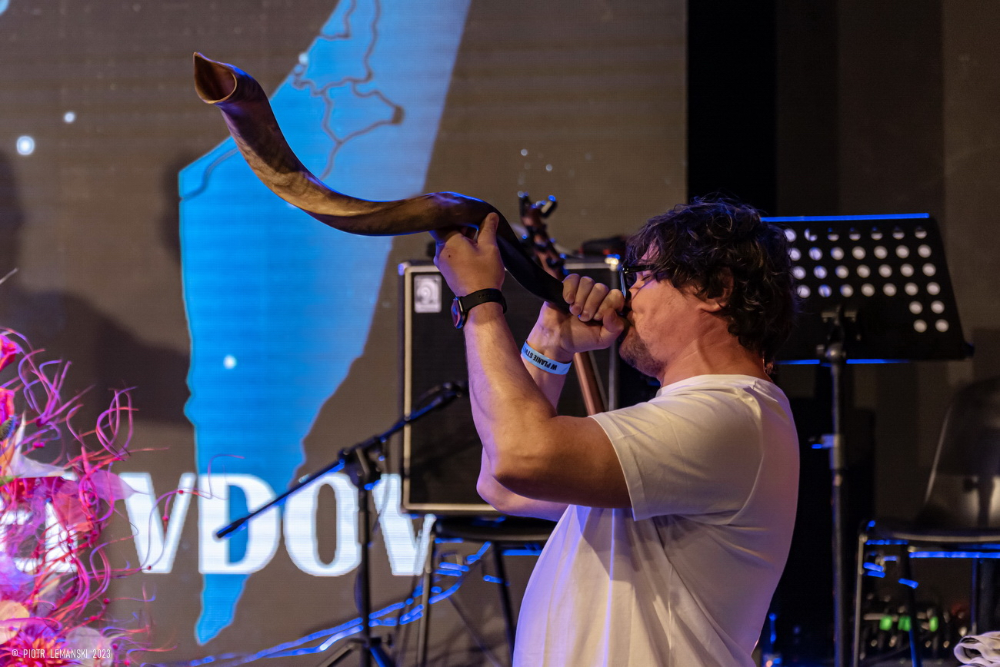
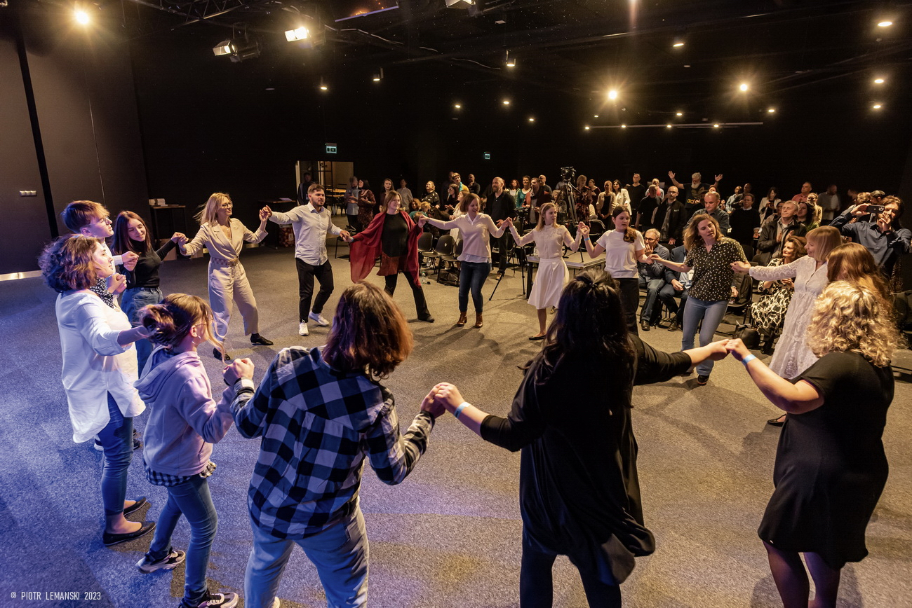
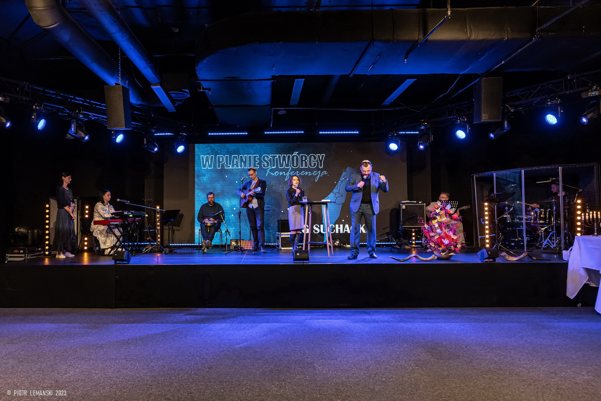
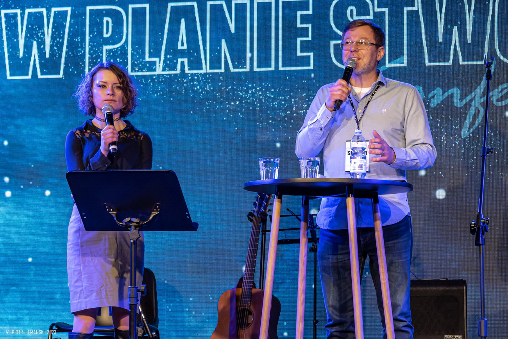

pidämme yllä Raamattuun pohjautuvia arvoja Suomessa ja maailmalla
Haluamme vahvistaa kristittyjen identiteettiä ajassamme
Tuemme ja siunaamme Israelia. Haluamme auttaa juutalaisia palaamaan alkuperäiseen kotimaahansa
ja
löytämään hengelliset juurensa Messiaassa
autamme mahdollisuuksien mukaan maailman kipupisteissä ja toimimme yhteistyössä eri järjestöjen
ja
kristillisten seurakuntien kanssa Suomessa, Israelissa ja muualla maailmassa.
Video-ja audiotuotanto
tuotamme video-ohjelmia ihmisistä arjen haasteiden keskellä ja etsimme vastauksia. Ohjelmia
tehdään
sekä suomeksi että venäjäksi.
Israel-aiheiset sarjat valottavat juutalaisten menneisyyttä ja nykypäivää
Raportoimme ajankohtaisista aiheista toiminta-alueellamme ja haastamme ihmisiä auttamaan ja
rukoilemaan.
tarjoamme ammattitason äänitekniikkapalveluja tilaisuuksiin ja tapahtumiin.
Avustustyö
Olemme avustaneet mm. Israelin vammaisten lasten kuntoutusta.
Tuemme ja avustamame Ukrainan pakolaisia Suomessa ja Euroopassa ja tuemme ukrainalaisia
paikallisseurakuntia heidän humanitäärisessä ja hengellisessä työssään.
Israel ja juutalaiset
Bible Media tunnustaa Israelin erityisaseman Jumalan omasuuskansana.
Vastustamme antisemitismin eri ilmenemismuotoja sanoin ja teoin.
Olemme epäpoliittinen järjestö.




Rahankeräyslupa:
PoHan rahankeräyslupa RA/2022/150 voimassa toistaiseksi 27.10.2022 alkaen
Suomessa
Ahvenanmaata lukuunottamatta. Varat käytetään yhdistyksen säännöissä ja rahankeräysluvassa
määriteltyyn
toimintaan Suomessa ja ulkomailla.